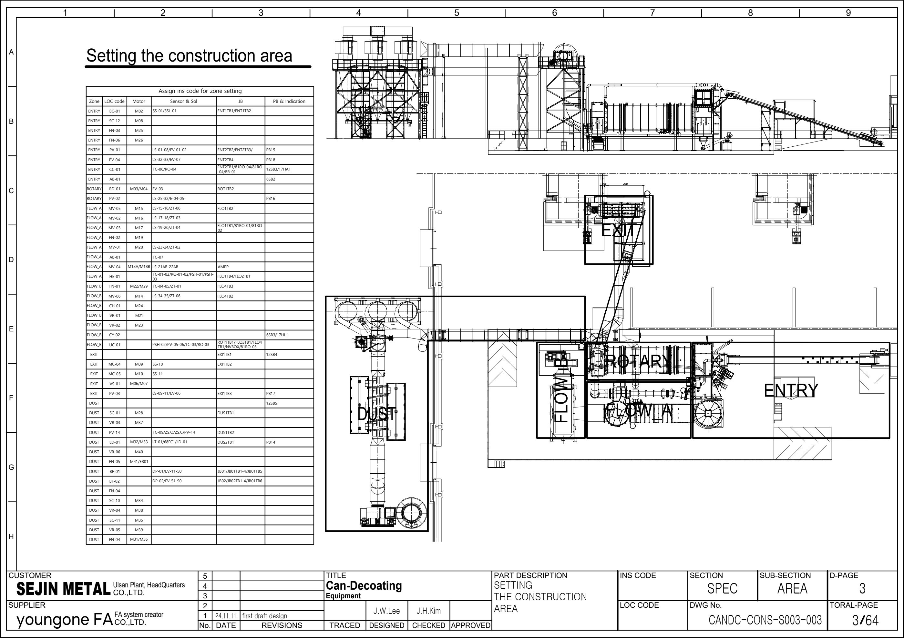
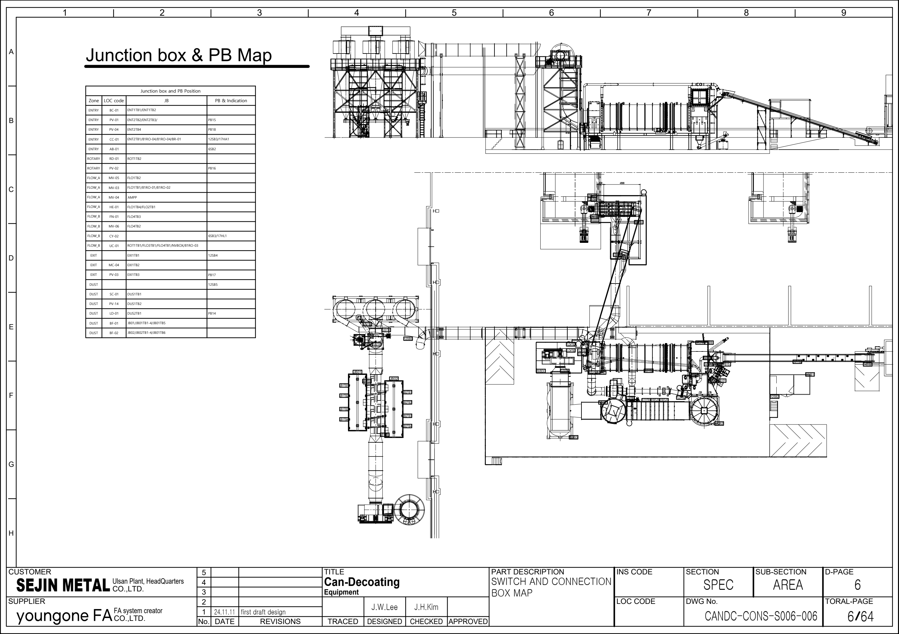
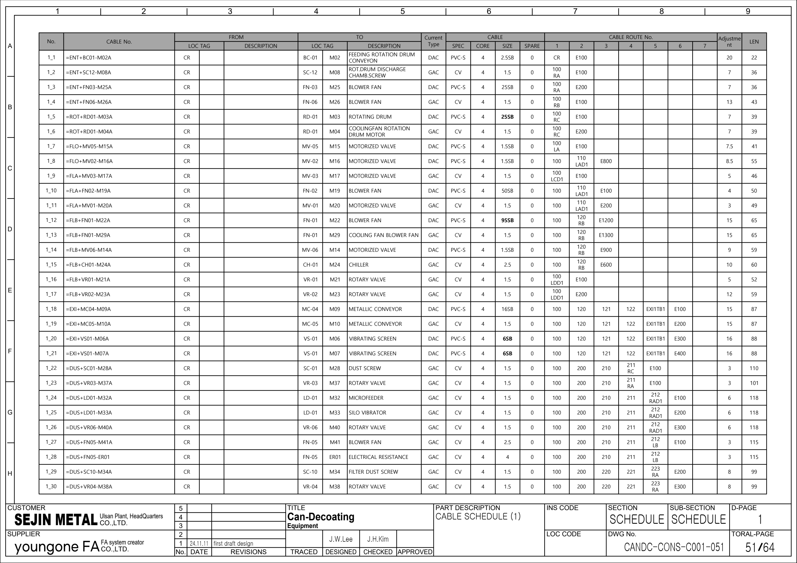
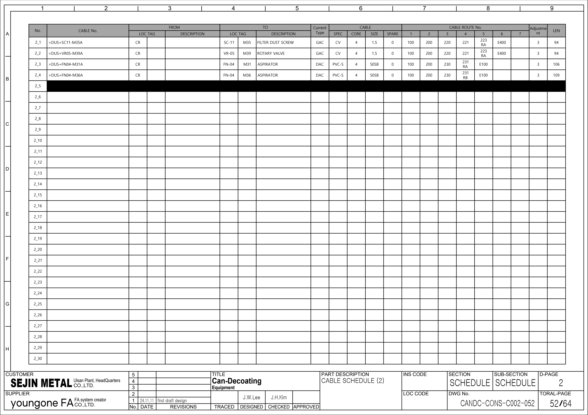
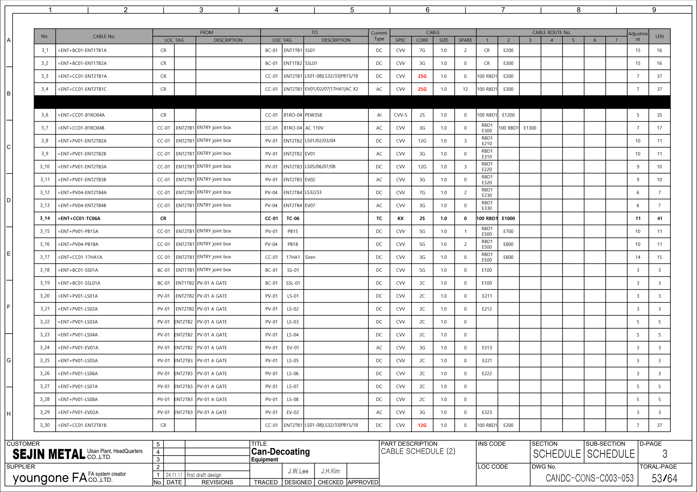
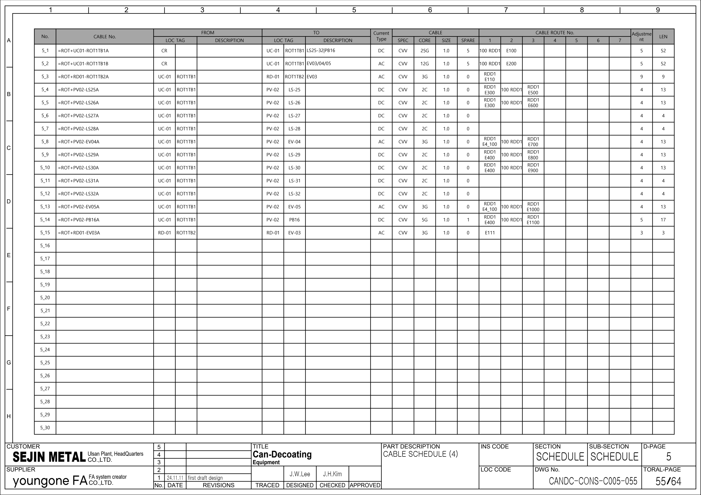

시공도면 참조 · 배치·접속함·케이블 추적
64페이지 전기 시공도면을 기존 OEM Rev.2 회로도·PLC 백업의 보완 근거로 사용합니다. 표지 FOR APPROVAL, 개정란 24.11.11 first draft design. 승인·준공·실제 설치·현재 배선은 확인 전입니다. PLC 주소와 실제 단자 핀은 이 자료만으로 확정하지 않습니다.
자료의 역할과 확인 범위
새 시공도면은 설비 위치 → 접속함 → 배관·트레이 → 케이블 양단·규격의 추적에 사용합니다. 기존 OEM 회로도는 장치 핀·접점·릴레이·PLC 주소를, 백업 LAD는 운전 조건·타이머·알람·리셋을 확인하는 근거입니다. 서로 다른 개정과 자료 범위이므로 어느 하나를 현재 현장 전체의 확정본으로 대체하지 않습니다.
원본 64페이지 중 21페이지를 시각 확인했습니다. 선택 동력 17행·제어 34행, 22개 참조 작업지를 연결했습니다. 승인·준공·실물 대응·배선·정상 극성은 미확인입니다.
파일명의 20241118, 개정란의 24.11.11, PDF 메타데이터의 2024-11-19는 각각 보존합니다. 작성일만으로 기존 Rev.2보다 유효한 최종 도면이라고 판단하지 않습니다.
우선 23개 · 현재 대응 상태 유지
| 우선·배치도 | PLC 참고 | 시공도면 작업지 | 상태 |
|---|---|---|---|
| P01 · BC-01(벨트) | BC01 | 케이블·배관 추적 | 태그 기준 참고 · 실물 대응 미확인 |
| P02 · FN-04 팬 모터 | FN04 | 케이블·배관 추적 | 태그 기준 참고 · 실물 대응 미확인 |
| P03 · 웨잉호퍼1 | 미확정 | 대응 미확정 · 추가 식별 필요 | PLC 대응 미확정 · 자동 연결 없음 |
| P04 · 웨잉호퍼배출컨베이어 | 미확정 | 대응 미확정 · 추가 식별 필요 | PLC 대응 미확정 · 자동 연결 없음 |
| P05 · PV-01 | PV01 | 케이블·배관 추적 | 태그 기준 참고 · 실물 대응 미확인 |
| P06 · 킬른 | RD01 | 케이블·배관 추적 | 본체 대응 후보 · 실물 미확인 |
| P07 · PV-02 | PV02 | 케이블·배관 추적 | 태그 기준 참고 · 실물 대응 미확인 |
| P08 · MC04 | MC04 | 케이블·배관 추적 | 태그 기준 참고 · 실물 대응 미확인 |
| P09 · VS01 | VS01 | 케이블·배관 추적 | 태그 기준 참고 · 실물 대응 미확인 |
| P10 · CC챔버 | CC01 | 케이블·배관 추적 | 본체 대응 후보 · 실물 미확인 |
| P11 · BR01 | BR01 | 케이블·배관 추적 | 태그 기준 참고 · 실물 대응 미확인 |
| P12 · 재연소로 | AB01 | 케이블·배관 추적 | 본체 대응 후보 · 실물 미확인 |
| P13 · 열교환기 | HE01 | 케이블·배관 추적 | 본체 대응 후보 · 실물 미확인 |
| P14 · 2사이클론 | 미확정 | 대응 미확정 · 추가 식별 필요 | PLC 대응 미확정 · 자동 연결 없음 |
| P15 · FN-01 팬 모터 | FN01 | 케이블·배관 추적 | 태그 기준 참고 · 실물 대응 미확인 |
| P16 · FN-02 팬 모터 | FN02 | 케이블·배관 추적 | 태그 기준 참고 · 실물 대응 미확인 |
| P17 · FN-03 팬 모터 | FN03 | 케이블·배관 추적 | 태그 기준 참고 · 실물 대응 미확인 |
| P18 · FN-06 팬 모터 | FN06 | 케이블·배관 추적 | 태그 기준 참고 · 실물 대응 미확인 |
| P19 · MV-01 | MV01 | 케이블·배관 추적 | 태그 기준 참고 · 실물 대응 미확인 |
| P20 · MV-03 댐퍼 모터 | MV03 | 케이블·배관 추적 | 태그 기준 참고 · 실물 대응 미확인 |
| P21 · MV-06 댐퍼 모터 | MV06 | 케이블·배관 추적 | 태그 기준 참고 · 실물 대응 미확인 |
| P22 · GSS | 미확정 | 대응 미확정 · 추가 식별 필요 | PLC 대응 미확정 · 자동 연결 없음 |
| P23 · 85톤로(압연) | 미확정 | 대응 미확정 · 추가 식별 필요 | PLC 대응 미확정 · 자동 연결 없음 |
보조 설비를 별도로 추적
새 시공도면 확인 대기 · 7건
아래 목록은 이번 시공도면의 별도 검토 항목입니다. 기존 18개 불일치의 상태를 해소하거나 덮어쓰지 않습니다.
| 검토·근거 | 도면 관찰 | 영향 | 확인 작업·상태 |
|---|---|---|---|
| C01 / MV06 새 시공도면 · PDF 58 8_6, 8_17 | =FLB+MV06-FLO4TB2A가 TM/CVV-S/4S/CR 시작 행과 DC/CVV/7G/UC01 시작 행에 반복됩니다. | 식별자만 키로 쓰면 서로 다른 신호·시작점이 합쳐집니다. | 제작사 수정본, 양단 케이블 표찰·접속함 단자 기록을 대조해 두 간선을 식별합니다. 확인 대기 · 현장 미확인 |
| C02 / BR01, CC01 새 시공도면 · PDF 64 14_17, 14_18 | =ENT+CC01-BR01F가 같은 FROM/TO·AI·4S 규격으로 두 행에 반복됩니다. | 중복 기재인지 실제 두 간선인지 확정할 수 없습니다. | 버너 전용 배선도와 양단 표찰·케이블 수를 확인합니다. 자동 중복 제거를 하지 않습니다. 확인 대기 · 현장 미확인 |
| C03 / MV05, MV06 새 시공도면 · PDF 56 6_6, 6_20 | MV05 FLO1TB2 간선 설명은 ZT06, 같은 접속함에서 나가는 직접 케이블·TO는 ZT05입니다. | MV06의 ZT06 또는 다른 센서로 잘못 연결될 수 있습니다. | MV05·MV06 실물 센서 표찰과 단자, 원본 회로도·PLC 심볼을 각각 확인합니다. 확인 대기 · 현장 미확인 |
| C04 / RD01 새 시공도면 · PDF 24 · 새 시공도면 · PDF 51 1_5 | =ROT+RD01-M03A: PDF24 배관표 SIZE16, PDF51 케이블 목록 SIZE25SB입니다. | 도면만으로 케이블 단면·사양을 선택할 수 없습니다. | 승인된 개정본과 실제 케이블·보호기기·모터 명판을 대조합니다. 이 매뉴얼에서 임의 규격을 확정하지 않습니다. 확인 대기 · 현장 미확인 |
| C05 / FN04 새 시공도면 · PDF 48 · 새 시공도면 · PDF 52 2_3, 2_4 | PDF48 DUST14의 모터 그림은 M34/M38, 표의 TAG는 M31/M34, 케이블 접미사·PDF52 TO는 M31/M36입니다. | FN04 두 분기를 SC10 M34·VR04 M38과 잘못 병합할 수 있습니다. | OEM FG59의 M31/M36, 배치도, 양단 표찰·모터 명판을 별도로 대조합니다. PDF48 표기를 현장 ID로 채택하지 않습니다. 확인 대기 · 현장 미확인 |
| C06 / PV02, EV03 새 시공도면 · PDF 24 · 새 시공도면 · PDF 55 5_3, 5_4, 5_5 | 배관도 PDF24의 LS25·LS26 No.는 5_3·5_4, 케이블 목록 PDF55에서는 5_4·5_5입니다. PDF55의 5_3은 RD01 ROT1TB2 간선입니다. | 짧은 No.만 따라가면 센서와 밸브 간선이 바뀝니다. | 전체 케이블 식별자+페이지+FROM/TO로 대조하고 제작사 개정본에서 참조 순번을 확인합니다. 확인 대기 · 현장 미확인 |
| C07 / MC04, MC05 새 시공도면 · PDF 59 9_8 | 케이블 식별자는 =EXI+MC04-SS11A지만 TO는 MC05 / SS11입니다. | MC04·MC05의 감시 신호와 정비 이력이 섞일 수 있습니다. | SS10·SS11 실물 위치, EXI1TB2 양단 단자와 OEM 회로도를 확인합니다. 이름만으로 소유 설비를 지정하지 않습니다. 확인 대기 · 현장 미확인 |
가려진 행 · 배선 근거에서 제외
시각 확인한 페이지에서 검은 가림 9행을 확인했습니다. 텍스트 추출에는 해당 행이 남아 있어도 사용 케이블로 채택하지 않습니다. 이 수치는 확인한 페이지 범위의 발견 수이며 모든 행의 가림 검토 완료를 뜻하지 않습니다.
| 원본 페이지 | 가림 행 | 처리 |
|---|---|---|
| 새 시공도면 · PDF 52 | 2_5 | 선택 배선·동작 모델·I/O 근거에서 제외 |
| 새 시공도면 · PDF 53 | 3_5 | 선택 배선·동작 모델·I/O 근거에서 제외 |
| 새 시공도면 · PDF 56 | 6_7, 6_8, 6_9, 6_10 | 선택 배선·동작 모델·I/O 근거에서 제외 |
| 새 시공도면 · PDF 58 | 8_5, 8_7, 8_8 | 선택 배선·동작 모델·I/O 근거에서 제외 |
읽는 방법
- PDF19·50은 설명 예시입니다. 예시 케이블의 LEN·장치 표기를 실제 목록 값으로 쓰지 않습니다.
- 51–64페이지의 D-PAGE는 1–14입니다. No. 1_1은 PDF1페이지를 의미하지 않습니다.
- 전체 케이블 식별자 =INS+LOC-TAG, FROM/TO, CURRENT TYPE, SPEC/CORE/SIZE/SPARE, 경로 열1–7, LEN을 함께 봅니다.
- 케이블 식별자가 중복될 수 있습니다. PDF페이지+행을 기록 키로 사용하며 실물·접속함·단자를 확인하기 전 자동 병합하지 않습니다.
- 삭제 표기·가림·SPARE·공유 접속함을 실제 운전 조건이나 설치 확정으로 해석하지 않습니다.
64페이지 전체 색인
| 도면번호 원문 | 구역·종류 | 시각 확인·주의 | |
|---|---|---|---|
| 새 시공도면 · PDF 1 | CANDC-CONS-S001-001 | 표지·목차 | 시각 확인 |
| 새 시공도면 · PDF 2 | CANDC-CONS-S002-002 | 표지·목차 | 시각 확인 |
| 새 시공도면 · PDF 3 | CANDC-CONS-S003-003 | 구역·모터·센서·접속함 배치 | 시각 확인 |
| 새 시공도면 · PDF 4 | CANDC-CONS-S004-004 | 구역·모터·센서·접속함 배치 | 시각 확인 |
| 새 시공도면 · PDF 5 | CANDC-CONS-S005-005 | 구역·모터·센서·접속함 배치 | 시각 확인 |
| 새 시공도면 · PDF 6 | CANDC-CONS-S006-006 | 구역·모터·센서·접속함 배치 | 시각 확인 |
| 새 시공도면 · PDF 7 | CANDC-CONS-R001-007 | 공통 및 공정별 케이블 경로 | 텍스트 색인 · 세부 시각 확인 전 |
| 새 시공도면 · PDF 8 | CANDC-CONS-R002-008 | 공통 및 공정별 케이블 경로 | 텍스트 색인 · 세부 시각 확인 전 |
| 새 시공도면 · PDF 9 | CANDC-CONS-R003-009 | 공통 및 공정별 케이블 경로 | 텍스트 색인 · 세부 시각 확인 전 |
| 새 시공도면 · PDF 10 | CANDC-CONS-R004-010 | 공통 및 공정별 케이블 경로 | 텍스트 색인 · 세부 시각 확인 전 |
| 새 시공도면 · PDF 11 | CANDC-CONS-R005-011 | 공통 및 공정별 케이블 경로 | 텍스트 색인 · 세부 시각 확인 전 |
| 새 시공도면 · PDF 12 | CANDC-CONS-R006-012 | 공통 및 공정별 케이블 경로 | 텍스트 색인 · 세부 시각 확인 전 |
| 새 시공도면 · PDF 13 | CANDC-CONS-R007-013 | 공통 및 공정별 케이블 경로 | 텍스트 색인 · 세부 시각 확인 전 |
| 새 시공도면 · PDF 14 | CANDC-CONS-R008-014 | 공통 및 공정별 케이블 경로 | 텍스트 색인 · 세부 시각 확인 전 |
| 새 시공도면 · PDF 15 | CANDC-CONS-R009-015 | 공통 및 공정별 케이블 경로 | 텍스트 색인 · 세부 시각 확인 전 |
| 새 시공도면 · PDF 16 | CANDC-CONS-R010-016 | 공통 및 공정별 케이블 경로 | 텍스트 색인 · 세부 시각 확인 전 |
| 새 시공도면 · PDF 17 | CANDC-CONS-R011-017 | 공통 및 공정별 케이블 경로 | 텍스트 색인 · 세부 시각 확인 전 |
| 새 시공도면 · PDF 18 | CANDC-CONS-E001-018 | 배관도 읽기·트레이 단면 | 텍스트 색인 · 세부 시각 확인 전 |
| 새 시공도면 · PDF 19 | CANDC-CONS-E002-019 | 배관도 읽기·트레이 단면 | 시각 확인 / 설명 예시 |
| 새 시공도면 · PDF 20 | CANDC-CONS-E003-020 | 배관도 읽기·트레이 단면 | 텍스트 색인 · 세부 시각 확인 전 |
| 새 시공도면 · PDF 21 | CANDC-CONS-E004-021 | ENTRY 배관 | 시각 확인 |
| 새 시공도면 · PDF 22 | CANDC-CONS-E005-022 | ENTRY 배관 | 텍스트 색인 · 세부 시각 확인 전 |
| 새 시공도면 · PDF 23 | CANDC-CONS-E006-023 | ENTRY 배관 | 텍스트 색인 · 세부 시각 확인 전 |
| 새 시공도면 · PDF 24 | CANDC-CONS-E007-024 | ROTARY 배관 | 시각 확인 |
| 새 시공도면 · PDF 25 | CANDC-CONS-E008-025 | ROTARY 배관 | 텍스트 색인 · 세부 시각 확인 전 |
| 새 시공도면 · PDF 26 | CANDC-CONS-E009-026 | FLOW A 배관 | 텍스트 색인 · 세부 시각 확인 전 |
| 새 시공도면 · PDF 27 | CANDC-CONS-E010-027 | FLOW A 배관 | 텍스트 색인 · 세부 시각 확인 전 |
| 새 시공도면 · PDF 28 | CANDC-CONS-E011-028 | FLOW A 배관 | 텍스트 색인 · 세부 시각 확인 전 |
| 새 시공도면 · PDF 29 | CANDC-CONS-E012-029 | FLOW A 배관 | 텍스트 색인 · 세부 시각 확인 전 |
| 새 시공도면 · PDF 30 | CANDC-CONS-E013-030 | FLOW A 배관 | 텍스트 색인 · 세부 시각 확인 전 |
| 새 시공도면 · PDF 31 | CANDC-CONS-E014-031 | FLOW B 배관 | 텍스트 색인 · 세부 시각 확인 전 |
| 새 시공도면 · PDF 32 | CANDC-CONS-E015-032 | FLOW B 배관 | 텍스트 색인 · 세부 시각 확인 전 |
| 새 시공도면 · PDF 33 | CANDC-CONS-E016-033 | FLOW B 배관 | 시각 확인 |
| 새 시공도면 · PDF 34 | CANDC-CONS-E017-034 | EXIT 배관 | 텍스트 색인 · 세부 시각 확인 전 |
| 새 시공도면 · PDF 35 | CANDC-CONS-E018-035 | DUST 배관 | 텍스트 색인 · 세부 시각 확인 전 |
| 새 시공도면 · PDF 36 | CANDC-CONS-E019-036 | DUST 배관 | 텍스트 색인 · 세부 시각 확인 전 |
| 새 시공도면 · PDF 37 | CANDC-CONS-E020-037 | DUST 배관 | 텍스트 색인 · 세부 시각 확인 전 |
| 새 시공도면 · PDF 38 | CANDC-CONS-E021-038 | DUST 배관 | 텍스트 색인 · 세부 시각 확인 전 |
| 새 시공도면 · PDF 39 | CANDC-CONS-E022-039 | DUST 배관 | 텍스트 색인 · 세부 시각 확인 전 |
| 새 시공도면 · PDF 40 | CANDC-CONS-E023-040 | DUST 배관 | 텍스트 색인 · 세부 시각 확인 전 |
| 새 시공도면 · PDF 41 | CANDC-CONS-E024-041 | DUST 배관 | 텍스트 색인 · 세부 시각 확인 전 |
| 새 시공도면 · PDF 42 | CANDC-CONS-E025-042 | DUST 배관 | 텍스트 색인 · 세부 시각 확인 전 |
| 새 시공도면 · PDF 43 | CANDC-CONS-E026-043 | DUST 배관 | 텍스트 색인 · 세부 시각 확인 전 |
| 새 시공도면 · PDF 44 | CANDC-CONS-E027-044 | DUST 배관 | 텍스트 색인 · 세부 시각 확인 전 |
| 새 시공도면 · PDF 45 | CANDC-CONS-E028-045 | DUST 배관 | 텍스트 색인 · 세부 시각 확인 전 |
| 새 시공도면 · PDF 46 | CANDC-CONS-E029-046 | DUST 배관 | 텍스트 색인 · 세부 시각 확인 전 |
| 새 시공도면 · PDF 47 | CANDC-CONS-E030-047 | DUST 배관 | 텍스트 색인 · 세부 시각 확인 전 |
| 새 시공도면 · PDF 48 | CANDC-CONS-E031-048 | DUST 배관 | 시각 확인 |
| 새 시공도면 · PDF 49 | CANDC-CONS-G001-049 | 케이블 목록 읽기 | 텍스트 색인 · 세부 시각 확인 전 |
| 새 시공도면 · PDF 50 | CANDC-CONS-G002-050 | 케이블 목록 읽기 | 시각 확인 / 설명 예시 |
| 새 시공도면 · PDF 51 | CANDC-CONS-C001-051 | 케이블 목록 · D-PAGE 1–14 | 시각 확인 |
| 새 시공도면 · PDF 52 | CANDC-CONS-C002-052 | 케이블 목록 · D-PAGE 1–14 | 시각 확인 / 가림 행 제외: 2_5 |
| 새 시공도면 · PDF 53 | CANDC-CONS-C003-053 | 케이블 목록 · D-PAGE 1–14 | 시각 확인 / 가림 행 제외: 3_5 |
| 새 시공도면 · PDF 54 | CANDC-CONS-C004-054 | 케이블 목록 · D-PAGE 1–14 | 텍스트 색인 · 세부 시각 확인 전 |
| 새 시공도면 · PDF 55 | CANDC-CONS-C005-055 | 케이블 목록 · D-PAGE 1–14 | 시각 확인 |
| 새 시공도면 · PDF 56 | CANDC-CONS-C006-056 | 케이블 목록 · D-PAGE 1–14 | 시각 확인 / 가림 행 제외: 6_7, 6_8, 6_9, 6_10 |
| 새 시공도면 · PDF 57 | CANDC-CONS-C007-057 | 케이블 목록 · D-PAGE 1–14 | 시각 확인 |
| 새 시공도면 · PDF 58 | CANDC-CONS-C008-058 | 케이블 목록 · D-PAGE 1–14 | 시각 확인 / 가림 행 제외: 8_5, 8_7, 8_8 |
| 새 시공도면 · PDF 59 | CANDC-CONS-C009-059 | 케이블 목록 · D-PAGE 1–14 | 시각 확인 |
| 새 시공도면 · PDF 60 | CANDC-CONS-C010-060 | 케이블 목록 · D-PAGE 1–14 | 텍스트 색인 · 세부 시각 확인 전 |
| 새 시공도면 · PDF 61 | CANDC-CONS-C011-061 | 케이블 목록 · D-PAGE 1–14 | 텍스트 색인 · 세부 시각 확인 전 |
| 새 시공도면 · PDF 62 | CANDC-CONS-C012-062 | 케이블 목록 · D-PAGE 1–14 | 텍스트 색인 · 세부 시각 확인 전 |
| 새 시공도면 · PDF 63 | CANDC-CONS-C013-063 | 케이블 목록 · D-PAGE 1–14 | 텍스트 색인 · 세부 시각 확인 전 |
| 새 시공도면 · PDF 64 | CANDC-CONS-C014-064 | 케이블 목록 · D-PAGE 1–14 | 시각 확인 |
주요 원본 페이지 보기
시공도면 PDF 3 · 원본 페이지 보기

시공도면 PDF 6 · 원본 페이지 보기

시공도면 PDF 51 · 원본 페이지 보기

시공도면 PDF 52 · 원본 페이지 보기

시공도면 PDF 53 · 원본 페이지 보기

시공도면 PDF 55 · 원본 페이지 보기
